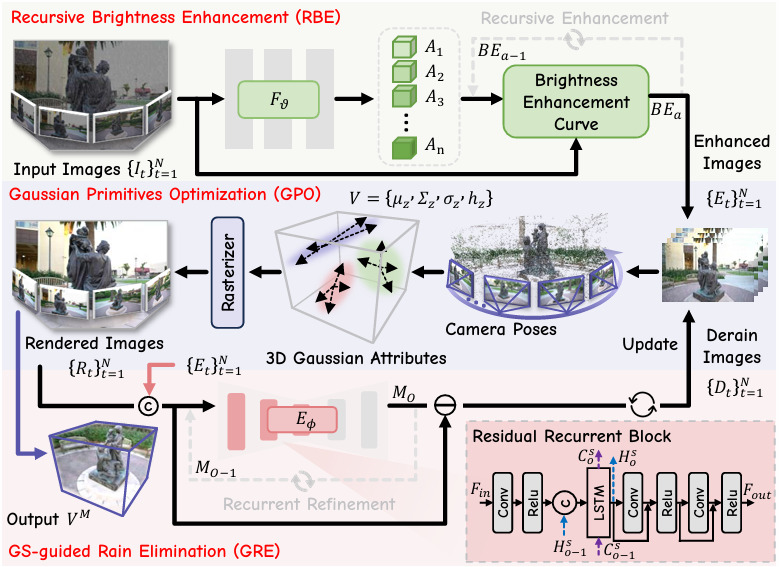
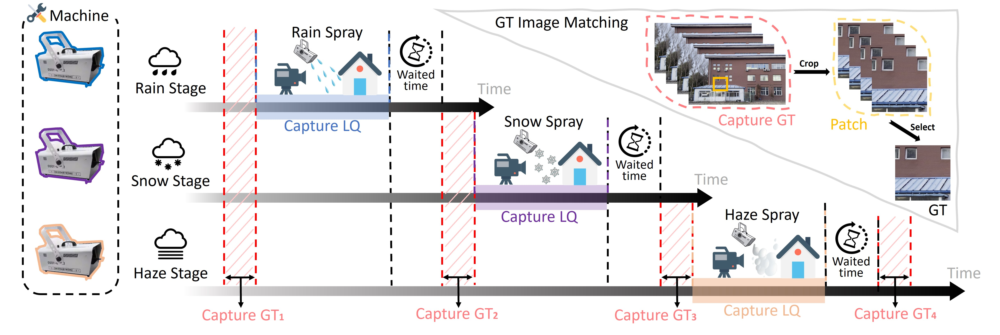
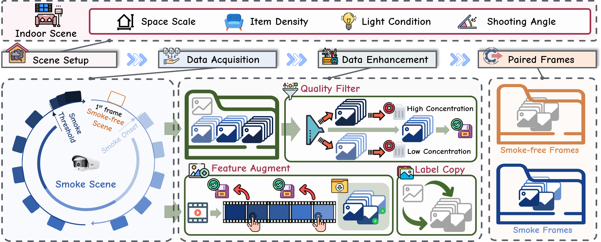

|
Qianfeng Yang (杨千凤) |
I am currently a 3rd-year Master's student at the School of Information Science and Engineering, Dalian Polytechnic University, under the supervision of Prof. Jiyu Jin. My research interests lie in computer vision, with a primary focus on low-level image restoration. I am also a Co-founder of Low-Level CV, an information platform dedicated to low-level computer vision. If you are interested in my research, please feel free to contact me.
|  |
Rethinking Rainy 3D Scene Reconstruction via Perspective Transforming and Brightness Tuning |
|  |
WeatherBench: A Real-World Benchmark Dataset for All-in-One Adverse Weather Image Restoration |
|  |
SmokeBench: A Real-World Dataset for Surveillance Image Desmoking in Early-Stage Fire Scenes |
Journal Reviewer:
Conference Reviewer: